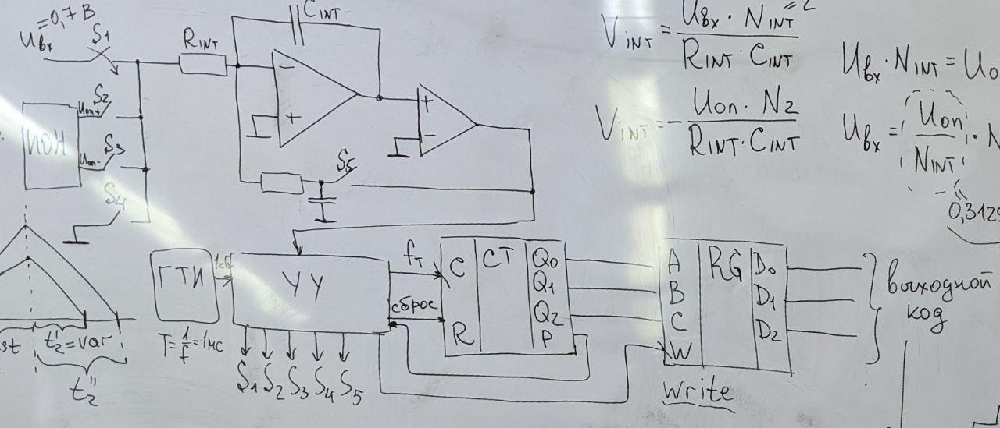
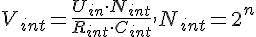
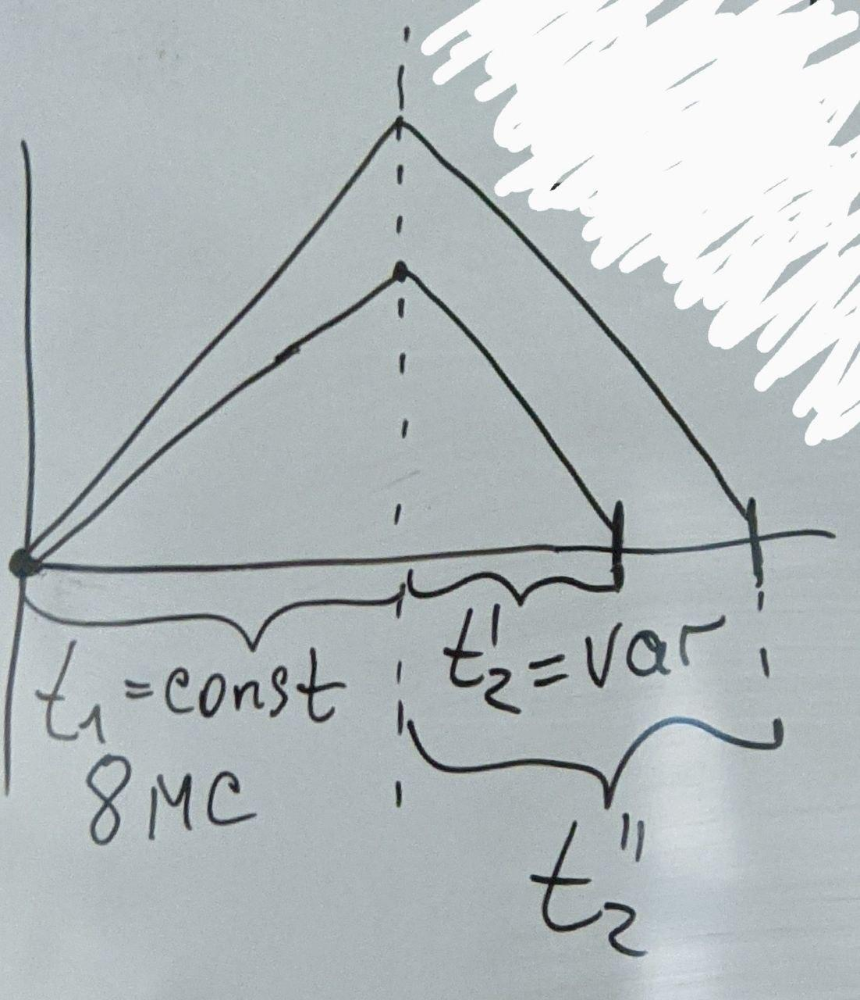
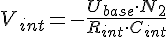
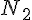
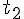
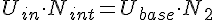
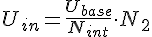
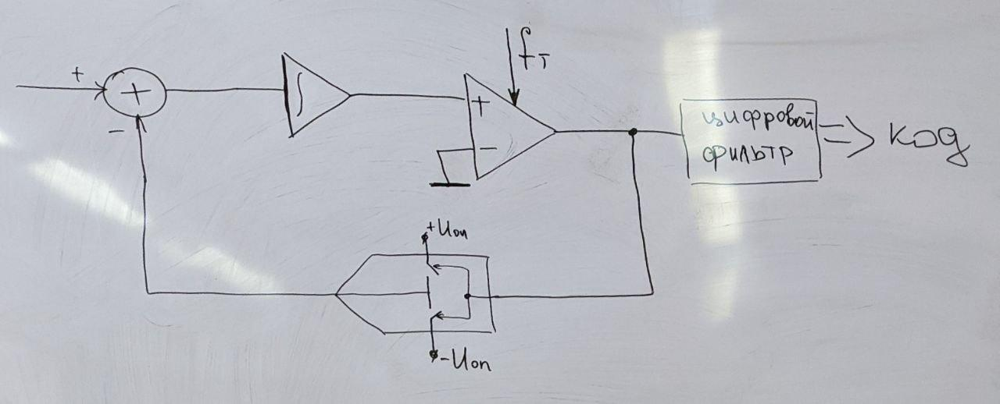

Интегрирующий АЦП

Регистр предназначен для хранения данных. Данные в регистр предварительно нужно записать. Для этого код должен быть заранее подан на входы регистра. В момент подачи сигнала записи код, поданный на входы, появляется на выходах и сохраняется на них до момента подачи следующего сигнала записи. Если АЦП выдаёт параллельный код то используются параллельные регистры (регистры памяти), а если последовательный - регистры сдвига.
В конце первого этапа интегрирования на выходе интегратора устанавливается напряжение, которое можно расчитать по формуле 

Напряжение на выходе интегратора на 2 этапе интегрирования можно выразить формулой ,  - кол-во тактовых импульсов за время 


Недостатки:
Достоинства:
АЦП
В состав такого АЦП входит не только интегратор, но и сумматор, компаратор и одноразрядный ЦАП. Основным элементом является цифровой фильтр
Рассмотрим сильно упрощённую схему АЦП

Достоинства:
Недостатки: